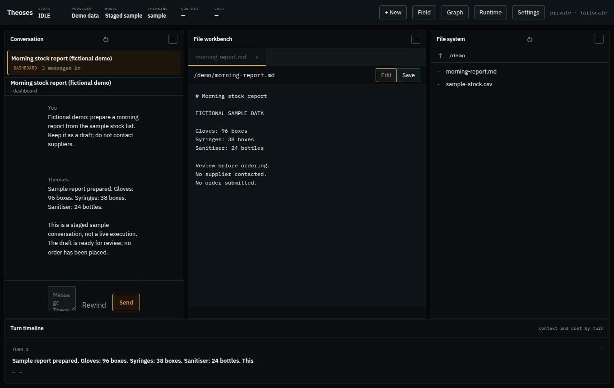

Procura
Inventory, suppliers, reorder planning and purchase orders in one connected application.
Procurement softwareView project: Procura
Turn repeated tasks into reviewable workflows.
A self-hosted personal assistant and coding agent, available through the terminal, Telegram and a private dashboard.
Actual Theoses dashboard; staged sample conversation, not live execution. Screenshot gallery only, not an interactive application.


Screenshot unavailable. Extract the complete preview ZIP with its assets, then reopen this page.
Research, files, reports and code changes need continuity across conversations—and important actions still need human review.
I built Theoses to work in real projects: read and edit files, run commands, research questions and use extensions. Persisted sessions, working notes and durable memory help carry context between tasks.
A Node.js and TypeScript runtime powers the terminal, Telegram and dashboard channels. Its tool loop can be extended with skills, providers and integrations. Channel sessions and durable memory serve different roles.
View source on GitHubThe images are staged sample conversations in the genuine dashboard, not live AI execution. The portfolio sends no messages, creates no orders and changes no files. The agent itself is not a filesystem or network sandbox.
If this is close to a problem you have, describe the work—not just the features you want.
Discuss your project